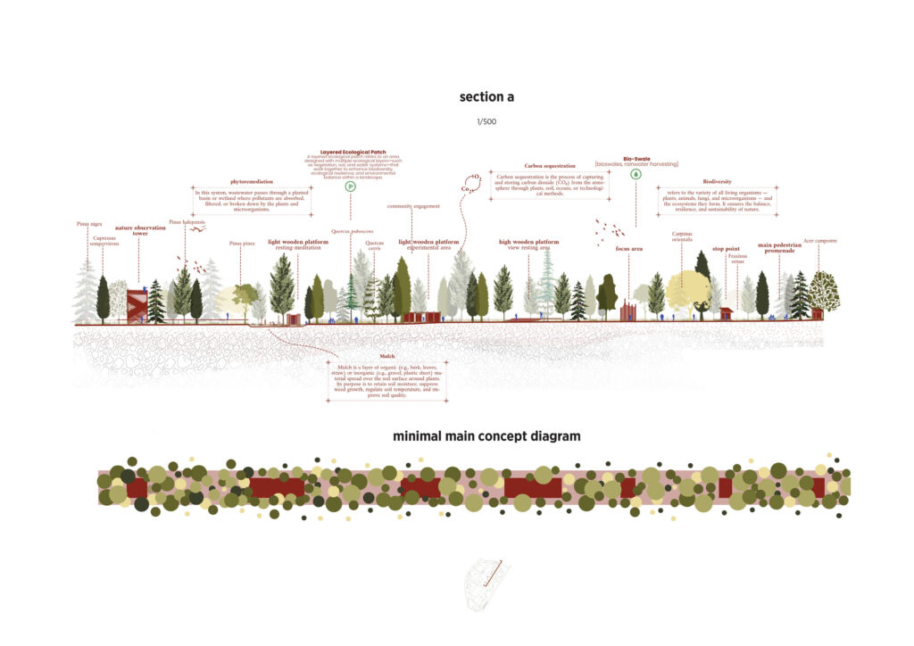
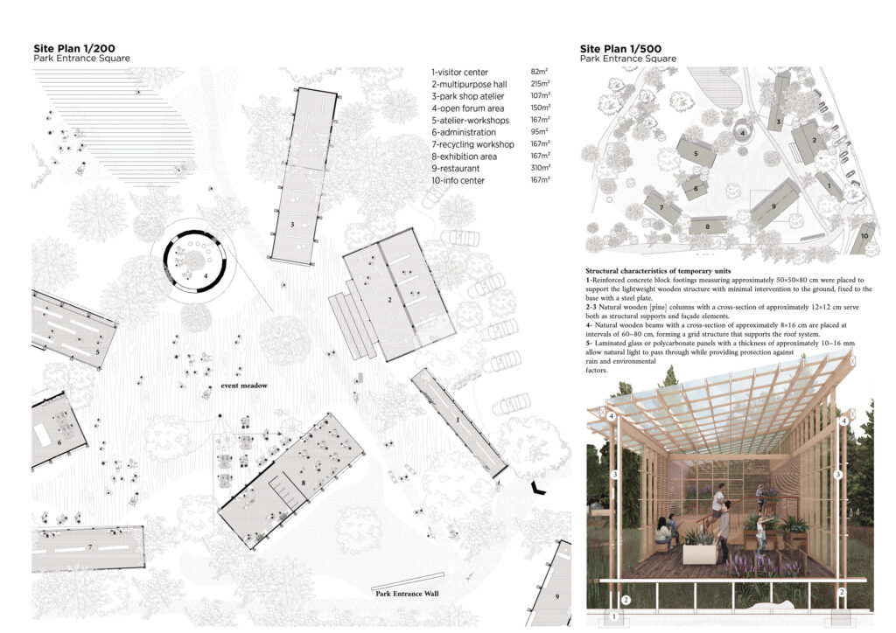
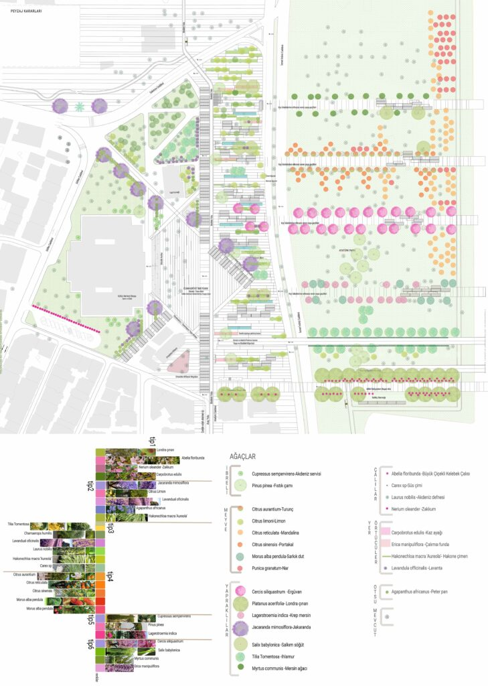
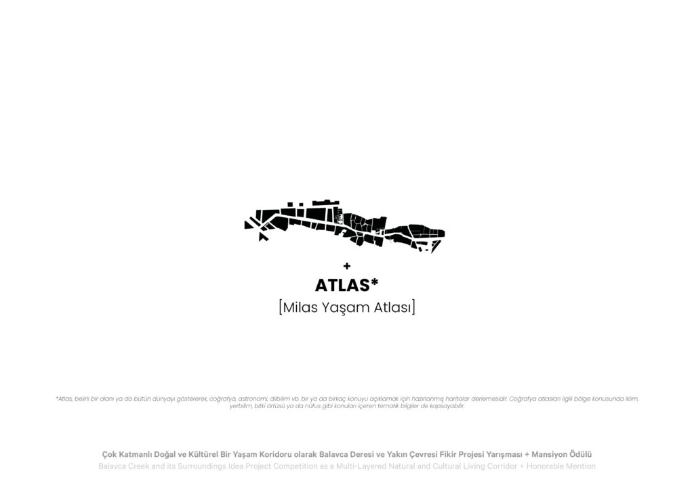
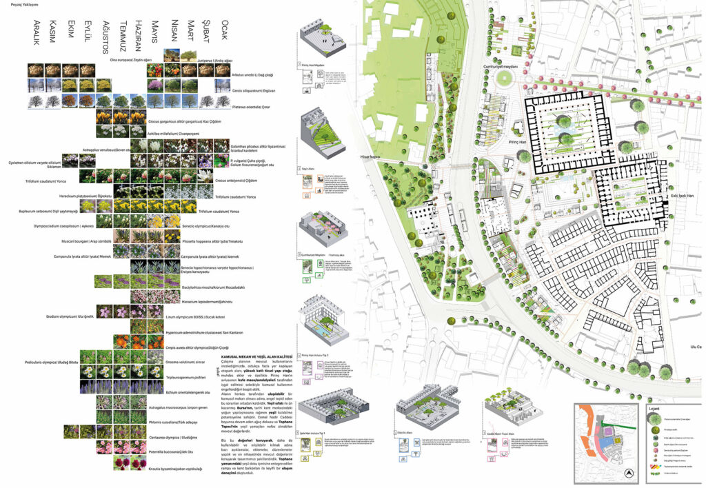

Zlatica Forest Park
International · Honorable Mention

Landscape Architect & Urban Designer
I design residential landscapes and public spaces, from the first site study through grading, planting and Revit documentation.

International · Honorable Mention

Türkiye · Third Prize

Türkiye · Third Honorable Mention

Türkiye · Honorable Mention



Türkiye · Purchase Award
About

Years · Since 2019
1 international · 6 in Türkiye
University
I am a passionate landscape architect and urban designer with a deep commitment to creating spaces that enhance human experience and promote sustainability. I graduated from Bilkent University and have worked in landscape architecture and urban design since 2019, on projects ranging from private gardens to large-scale urban design.
My approach combines rigorous site analysis, innovative design thinking, and a profound respect for the natural environment. I believe that great design emerges from understanding the unique context of each project and collaborating closely with stakeholders to bring their vision to life.
Media
Watch detailed project explanations and design walkthroughs.
Mimarlarımızdan Tam Not Alan Peyzaj Tasarımı - Muğla Milas Peyzaj Projesi
Marmaris Projemizin Peyzaj Detaylarını Mimarımız Anlatıyor!
Tasarım Özel Programı 7. Bölüm | A • H Villa Muğla Milas
Tasarım Özel Programı 3.Bölüm | Salkım Villa Fethiye
Kurakçıl Peyzaj Projesi (Akdeniz Bahçe Tasarımı) Değerlendirme
Doğal, Estetik ve Sürdürülebilir: Bu Peyzaj Projesi Çok Konuşulacak!
Japon Bahçelerinden İlham Alan Minimalist Peyzaj Tasarımı
Kapalı Havuz ve Barbekü Tasarımıyla Muhteşem Peyzaj Mimarisi
2023 Peyzaj Tasarımı Trendlerini Uyguladığımız Proje
Eğimli Arazi Tasarımında Tartışmalı Çözümler
Eğimli Arazide Sürdürülebilir ve İnovatif Yaşam Alanları
Services
Creating beautiful and functional outdoor spaces that enhance quality of life and promote environmental sustainability.
Strategic planning for sustainable and livable urban environments that balance development with ecological preservation.
Comprehensive analysis and expert guidance for your projects, including 3D visualization and detailed site assessments.
Insights
Thoughts on urban design, landscape architecture, and award-winning projects.
Urban Design
Apr 1, 2024
Urban design analysis for understanding walkability and urban connectivity in Mersin Municipality's strategic planning. This project focuses on comprehensive urban design analysis to enhance walkability and create more livable urban spaces.
Read More →Urban Design
Apr 1, 2024
Atlas approach to Milas Balavca creek - integrating natural water features into urban design. Using an atlas-based approach, we analyzed the Milas Balavca creek and surrounding landscape to develop an integrated urban design strategy.
Read More →Get in Touch
Have a project in mind? I'd love to hear from you and explore how we can collaborate to create meaningful spaces.